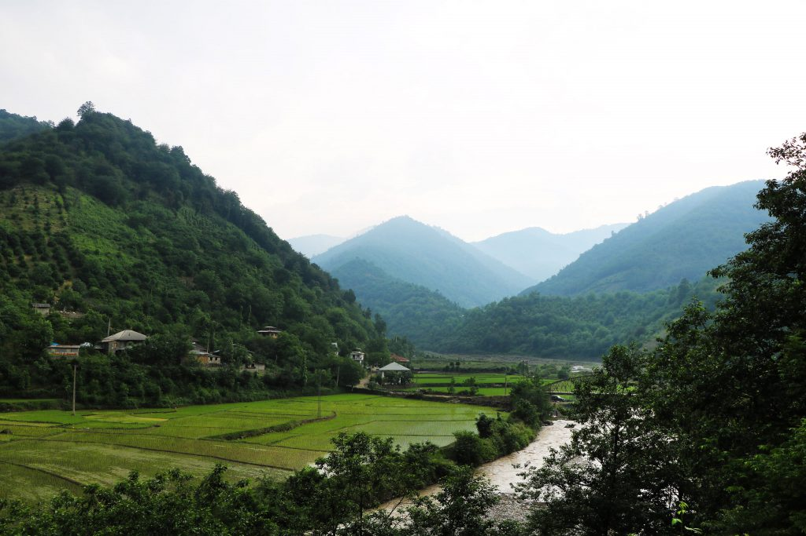
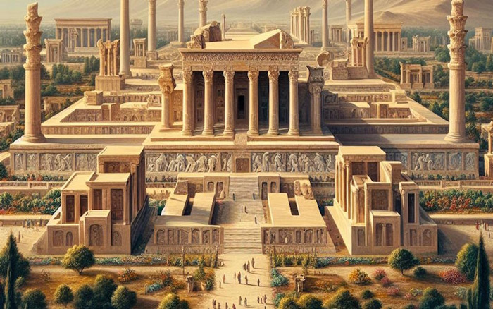
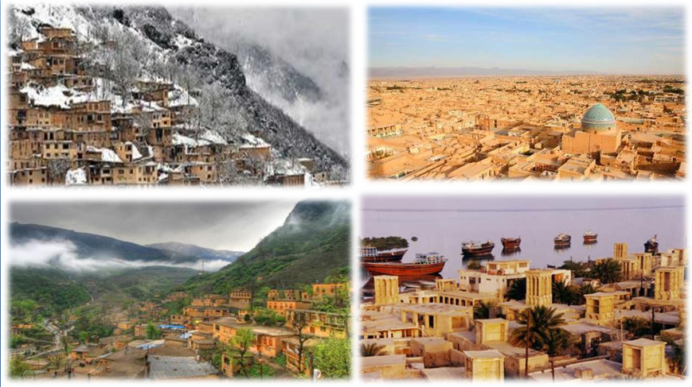
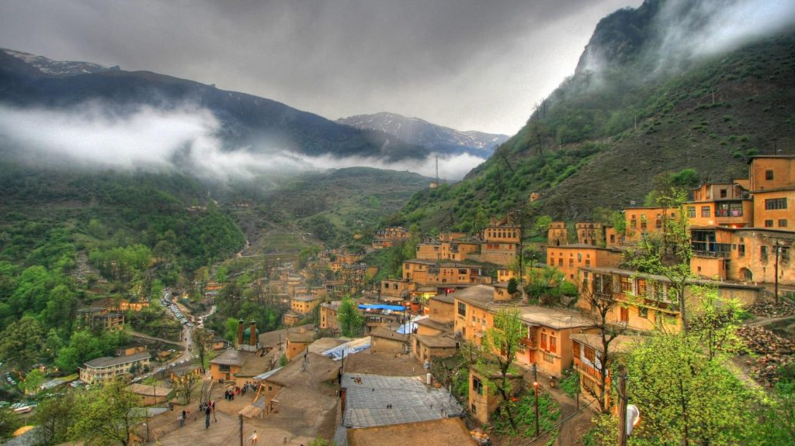

ایران،سرزمین چهار فصل
ایران به دلیل تنوع اقلیمی، یکی از کشورهایی است که در تمام فصول سال قابل بازدید است. از برفهای زمستانی شمال تا گرمای تابستانی جنوب، هر فصل زیبایی خاص خود را دارد.
فرهنگ و هنر در ایران
ایران با تاریخی غنی از هنر و فرهنگ، خاستگاه شعر، موسیقی، معماری و صنایع دستی است. از نقاشیهای مینیاتوری تا موزیک سنتی، همه نشانههایی از عمق فرهنگ ایرانی هستند. بازدید از موزهها، گالریها و آثار باستانی همچون تخت جمشید، مسجد شاه اصفهان و بازارهای سنتی، فرصتی برای لمس زیبایی و شکوه هنر ایرانی را فراهم میکند.
تنوع اقلیمی ایران
ایران با داشتن کوهها، دشتها، بیابانها و دریاها، یکی از کشورهایی است که تنوع اقلیمی بالایی دارد. این تنوع باعث شده است که هر منطقه از ایران ویژگیهای خاص خود را داشته باشد. برای مثال، در یک روز میتوانید اسکی در دامنههای برفی البرز و قدم زدن در سواحل گرم خلیج فارس را تجربه کنید.
طبیعت ایران
طبیعت ایران شامل جنگلهای سرسبز شمال، بیابانهای وسیع مرکزی و دریاهای زیبا در جنوب است. این تنوع طبیعی، گردشگران را از سراسر جهان به خود جذب میکند. مناطق دیدنی مانند جنگلهای هیرکانی، کویر لوت، آبشارهای لرستان و جزایر قشم و هرمز، نمونههایی از شگفتیهای طبیعی ایران هستند که برای دوستداران طبیعت جذابیت زیادی دارند.